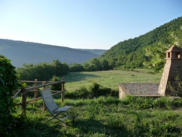

Some notes on what I took home from the Agile Coach Camp Italy 2011, that happened in a beautiful country resort in Umbria from 6 to 8 May.

The session “What is a coach” facilitated by Andrea Provaglio, for a sampling of how coaches think and what they do.
The session on “Agile ceremonies in distributed teams”, facilitated by Sven Tiffe, for tips and real-life tales.
The session “Coaching Dojo”, facilitated by Oana Juncu, where novice coaches practice problem solving by asking questions.
The session about ALE Italy, again by Andrea, where we shared ideas and vision about a shared idea of Agile and Lean in Europe. In particular the idea of sharing “Status of Agile in my Country” reports.
The session about Conceptualizations by Pierluigi Pugliese, that introduced some strategic-level models for deciding how and if to introduce change in an organization.
The session about “A3 Thinking” by Claudio Perrone, showing that problem solving is a structured activity that can be taught and learned.
The session “Becoming a Coach”, organized by Vittorio Scibetta, where accomplished coaches shared their thoughts on things that shaped their coaching and how to learn about coaching.
The coding dojo where Alberto Brandolini practiced the art of maintaining focus while a chattering crowd of “umarell” (*) was teasing and criticizing him!
Now it’s clear to me that being an agile coach involves more than knowing TDD. If you want to be an “agile coach”, there’s a lot to learn about the “coach” part in addition to the “agile” part.
This was the first “unconference” I attended. In this kind of conference, also known as an “open space”, the program is not prepared beforehand; rather, the organizers provide a structure, such as blank timetables, rooms and materials, and by a process called “marketplace” the participants prepare the program on the spot. It was great! I learned so much. In this case the openspace organizer was Pierluigi, who spent a lot of care and attention to detail to make it work smoothly.
I also was impressed by the good energy of participants; lots of games, laughs and smiles. It’s been a very good place to be.
(*) In Bologna, “umarell” is someone with time on his hands who watches workers in roadworks and offers criticism :-)
{kind=link}
{kind=link}
{kind=link}
{kind=link}